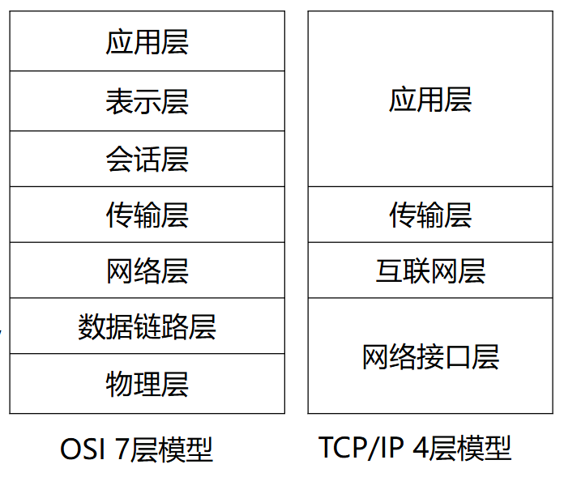
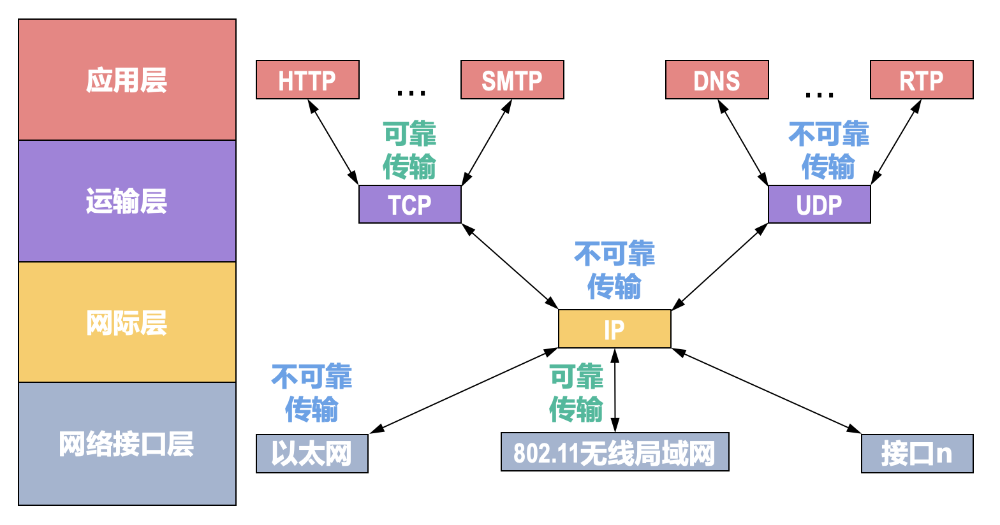

引言
协议与分层结构
面向连接 / 无连接
TCP 是面向连接, UDP 是无连接 (无连接也叫 datagram service)
UDP 无应答, 不保证数据能到达, 可能丢包 / 乱序
模型

标识
tcp: port ip: address
socket
调用不可靠的 UDP 和可靠的 TCP
多客户
服务端监听套接字在本地创建临时的连接套接字与客户端通信
系统调用
-
connect()三次握手, 阻塞
-
accept()
度量单位
时延
传输: 数据到链路上
传播: \(A\to B\)
RTT
ping
时延带宽积
有效吞吐量
除去头信息的有效信息
安全
DoS: Denial of Service
物理层
波特率
波特率为每秒钟发送的符号/码元数量
比特率为每秒钟发送的有效比特数量
波特率 = 比特率 \(\div\) 符号编码所需的比特数
例如, 在 4B/5B 编码中, 假设比特率是 \(100\text{ Mbps}\), 编码效率 \(80\%\), 说明线路中 \(5\) 个符号转换成原始数据的 \(4\) bit, 所以波特率 \(125\text{ Mbaud}\)
如果电压有 \(8\) 档, 那一个符号代表 \(\log_2 8=3\) 个 bit, 所以波特率是比特率的 \(3\) 倍
带宽
有两种带宽
bandwidth 等于最大数据传输的比特率
frequency range 等于频谱的宽度
信道容量定理
Nyquist-Shannon Sampling Theorem
Shannon Channel Capacity Theorem
见 博客
复用
码分复用 CDMA
每个站有一个码片
对于两个不同站的码片 \(S,T\) 满足正交: \(\frac 1m \sum_{i=1}^m S_i\cdot T_i=0\)
对于一个站, 如果发送 \(1\), 把自己的码片发送出去, 接收端计算得到 \(S\cdot S=1\); 如果发送 \(0\), 把码片取反发送出去, 接收端计算得到 \(S\cdot (-S)=-1\)
多个站的码片叠加, 接收端依次用不同站的码片计算内积, 由于这个站的码片与其他站的码片正交, 结果只显示自己站发来的码片结果
这个想法与中国剩余定理/拉格朗日插值类似
数据链路层
检错与纠错
检查 \(d\) 个错需要 hamming distance \(d+1\) 的码, 因为有 \(d+1\) 个错可能没错; 有 \(r>d+1\) 个错等价于有 \((r\mod (d+1))\) 个错
纠正 \(d\) 个错需要 hamming distance \(2d+1\) 的码, 为了距离为 \(d\) 的范围不重叠
检错码
CRC
与有限域有关
参考 error correction, Galois Field
纠错码
单比特纠错: 对于 \(n=m+r\) 的编码, 有效信息 \(2^m\) 个, 且有 \(n\) 个 hamming distance 为 \(1\) 的编码, 把这 \(n+1\) 个编码看成一族
假设各个族之间不重叠, 则可以纠错; 并且总数量必须能用 \(2^n\) 完整表示
所以 \(2^m(n+1)\leq 2^n\)
hamming code
妙
Reed-Solomon code
同样与 有限域 有关
可靠传输
可靠信道 (有线) 可以选择不向上层提供可靠传输, 可靠传输有上层实现
不可靠信道 (无线) 必须在数据链路层向上层提供可靠传输
停等协议
滑动窗口协议
Piggybacking
有差错 ARQ
出错概率为 \(P\), 一个帧的期望传输是 \(N_r=\sum_i iP^{i-1}(1-P)=1/(1-P)\)
回退 N
重传出错帧后的所有帧
用 \(n\) 个 bit 作为序列号
\(W_T\leq 2^n-1, W_R = 1\)
发送过程中出错, 接收方只会回复接收到的最后一帧的序号, 导致发送方需要重传后面丢失的所有帧
例如发送 0,1,2,3,4, 发送过程中 2 丢失, 接收方只会 ack 1, 所以发送方移动 2 位
回传过程中丢失不影响, 比如回复了 0,1,3,4, 那么发送方照样会移动 5 位
每出一次错需要重传 \(K\) 帧
选择重传
只重传出错的那一帧
\(W_R\leq W_T, W_T+W_R\leq 2^n\)
发送过程中丢包, 接收方发送 NAK 给发送方, 即为选择
接受过程中丢包, 发送方的窗口会卡在未接受 ACK 的帧, 其他接受 ACK 的帧不用再次发送, 等待丢失的帧超时重传, 所以效率不如 GBN
因为每个帧之间相互独立, 期望传输次数都是 \(N_r\)
PPP 点对点
透明传输
向上提供不可靠传输, 因为靠 CRC 判断, 错了就丢
竞争协议
ALOHA
符合泊松分布
信道利用率: \(Ge^{-2G}\) 和 \(Ge^{-G}\)
CSMA
非持续 CSMA
-
监听空闲则发送
-
监听繁忙, 等待随机时间, 返回 1
持续 1-CSMA
-
监听空闲则发送
-
监听繁忙则持续监听
持续 p-CSMA
-
监听空闲, \(p\) 概率发送, \(1-p\) 概率等待一个时间单元
-
监听繁忙则持续监听, 空闲重复步骤 1
-
若等待一个时间单元, 返回 1
CSMA/CD(持续 1-CSMA)
-
监听空闲则发送
-
监听繁忙则持续监听
-
若冲突立即停止传输, 并发送 jam 干扰信号使所有站点都能检测到冲突
-
经典以太网使用 CSMA/CD
二进制回退
发送一帧的平均时间 \(P\) 秒, 一个站点获得信道的概率 \(A=kp(1-p)^{k-1}\), 时间槽 \(2\tau\)
RTT = \(2\tau\)
信道利用率 \(\frac{P}{P+2\tau/A}\)
\(\min(1/A)=e\)
非竞争协议
位图
\(N\) 个时隙(1Byte), \(N\) 个站置 \(1\) 表示, 之后按序传输
信道利用率: 平均发送 \(d\) 帧, 低负载 \(d/(d+N)\), 高负载 \(d/(d+1)\)
令牌
转一圈, 数据附加在令牌上
二进制倒数
排序从大到小
\(d/(d+\log_2N)\)
对称协议
每个站以 \(p\) 概率抢信道
只有一个站抢到概率 \(kp(1-p)^{k-1}\)
最优解 \(p=1/k\)
优先竞争协议
自适应树搜索协议
在一次成功传输后的第一个竞争时隙, 所有站点同时竞争
如果冲突, 下个时隙递归到下一层, 竞争节点数减半
第 \(i\) 层需要 \(2^i\) 个时隙, 每个时隙原树 \(2^{-i}\) 的节点竞争
假设维护了一个最近信道的 ready 站点数 \(q\)
假设从第 \(i\) 层开始, 每个节点下面有原树 \(2^{-i}\) 的节点, 对应了 \(2^{-i}q\) 个 ready 节点
如果每个节点期望只有 \(1\) 节点, 那么 \(i=\log_2 q\)
交换机
网桥的现代名称
与 Hub 不同, 交换机可以不每次都 flooding, 而是查 MAC 表转发到特定端口
只有查不到时在广播到 FF:FF:FF:FF:FF:FF 进行 flooding
三种交换模式
- 存储转发: 接受完整帧再转发, 延迟大, 不转发错帧
- 直通: 得到目的地址立即转发
- 无碎片: 接受前 64 帧再转发, 过滤冲突碎片
生成树协议
选优先级, ID 最小的根桥
每个交换机选到根桥路径开销最小的根端口
每个网段选到根桥路径开销最小的指定端口
网络层
VC
internet 网际协议
IPv4
分 A, B, C 类地址
用子网掩码计算得到的是网络号 + 子网号
可分配的地址为 \(2^n-2\), 除去全 0 和全 1
使用最长前缀匹配, 在掩码长度内严格匹配的表项中选掩码长度最长的一个
DHCP
discover -> offer -> request -> ACK
request 仍使用广播, 这样多个 DHCP, 其他 DHCP 可以收回分配的 IP
在客户机发送时将 MAC 地址加入数据报
ARP
NAT
多个私网地址共用一个公网 IP, 节省公网空间
ICMP
Ping
使用询问报文 echo request
TraceRoute
第 \(i\) 次发送的数据报 TTL = i, 这样转发到第 \(i\) 个路由器时会超时, 路由器发送超时差错报文给客户机, 客户机收到路由器名称
routing algorithm
RIP
bellman-ford
OSPF
dijkstra
传输层
流量控制
拥塞控制
Jacobson's algorithm
Exponential Weighted Moving Average
用于估计 RTT
应用层
SMTP + MIME
SMTP 仅支持 ascii
所以用 MIME 将非 ascii (如二进制可执行文件) 转换成 ascii
POP3 + IMAP
POP3 不支持管理, 仅支持下载保留/删除
网络安全
crypto
RSA
ECC
实体识别
replay attack
对称密码体制
A 向 B 发的验证可能被 C 截获, 导致 B 一直给 C 发消息
所以每次发送带一个随机数
A 发送 username + \(R_A\), B 使用对称密码算法 \(K_{AB}\) 计算 \(K_AB(R_A)\)
之后 B 发送 \(K_AB(R_A)\) + \(R_B\), A 验证 \(K_{AB}(K_AB(R_A))=R_A\), 验证了 \(B\) 身份
A 发送 \(K_AB(R_B)\), B 验证 A 身份
由于每次使用不同的随机数, C 不能保证自己的随机数与上一次的 \(R_A\) 不同的同时和这一次的 \(R_A'\) 一定相同, 即不能伪造身份
实验
socket
client 隐式绑定, 将自己的 ip 和端口号绑定到 socket_fd, 端口号是随机分配的
server 显示绑定, 绑定指定的端口号, 便于 client 访问
client/server
应用
TUN
CS144
clash verge
重要概念
ARQ
停等序列号 1 bit
集线器只工作在物理层，它的每个接口仅简单地转发比特，并不进行碰撞检测；碰撞检测的任务由各站点中的网卡负责

可靠传输由用户主机保证, 即传输层
各层都能实现可靠传输
如数据链路层对不可靠的无线传输建立可靠传输
网络层建立面向连接的虚电路
协议/端口号:
DNS UDP 53
DHCP UDP 67/68
SMTP TCP 25
POP3 TCP 110
IMAP (internet mail access protocol) TCP 143
HTTP TCP 80/8080
HTTPS TCP 443
RIP UDP 520
BGP TCP 179
FTP TCP 21/20
Telnet TCP 23
SSH TCP 22
RTP UDP
TFTP UDP
路由器相当于多张网卡, 多个 mac/ip 地址
IPv4 数据报每经过一个路由器，其首部中的某些字段的值（例如 TTL、标志以及片偏移等）都可能发生变化，因此路由器都要重新计算一下首部校验和
ping: 应用层直接用网络层的 ICMP
traceroute: 每次增加 TTL
在计算机网络中，实际进行通信的真正实体，是位于通信两端主机中的进程。如何为运行在不同主机上的应用进程提供直接的逻辑通信服务，就是传输层的主要任务。传输层协议又称为端到端协议。
TCP 三次握手:
防止“已失效的连接请求”突然又传到了服务端（主要原因） 场景：Client 发出的第一个 SYN 包在网络中滞留了很久，Client 超时重发了第二个 SYN，建立了连接并传输完数据关闭了。 问题：过了一会儿，那个滞留的第一个 SYN 包到了 Server。 如果是两次握手：Server 收到这个旧 SYN，以为 Client 又要建立连接，于是发出 ACK，连接就建立了。Server 开始傻等 Client 发数据，浪费资源。 如果是三次握手：Server 收到旧 SYN，回复 SYN+ACK。Client 收到后，发现“我没想建立连接啊”，于是回复 RST（复位）包，拒绝连接。
TCP 四次挥手:
前两次挥手后 client -> server 半关闭
后两次挥手是为了保证 server 处理的数据传输完毕, 之后再发送 FIN
TIME_WAIT 的意义: 重传可能丢失的对 server FIN 的 ACK 包, 防止自己已经关闭以后接收到第二个 server 的 FIN, 回复 RST, 使 server 非正常关闭
同时设置成 2MSL 能够保证接受所有 server 的旧 ACK 包, 防止建立新连接后接受旧数据包
TCP 流量控制: 非零窗口通知丢失, client 不发, server 也不重发通知, 则会一直等待. 所以 client 要一直周期性发零窗口探测, 超时重发, 直到 server 回复非零
HTTP 常见请求/响应代码:
1xx（信息性状态码）：表示接收的请求正在处理。
2xx（成功状态码）：表示请求正常处理完毕。
3xx（重定向状态码）：需要后续操作才能完成这一请求。
4xx（客户端错误状态码）：表示请求包含语法错误或无法完成。
5xx（服务器错误状态码）：服务器在处理请求的过程中发生了错误。
200 OK
202 Accepted
30x CDN redirect
400 Bad Request 客户端请求的语法错误，服务器无法理解
401 Unauthorized 请求要求用户的身份认证
403 Forbidden 服务器理解请求客户端的请求，但是拒绝执行此请求
404 Not Found 服务器无法根据客户端的请求找到资源（网页）。通过此代码，网站设计人员可设置"您所请求的资源无法找到"的个性页面
500 Internal Server Error 服务器内部错误，无法完成请求
502 Bad Gateway 作为网关或者代理工作的服务器尝试执行请求时，从远程服务器接收到了一个无效的响应
504 Gateway Time-out 充当网关或代理的服务器，未及时从远端服务器获取请求
throughput = window size(bit)/RTT
line efficiency = throughput/bandwidth
啊啊啊计网你简直就是一个叛徒特务大军阀反党分子野心家走资派投降派修正主义大恶霸黑线人物不革命黑秀才黑手黑帮凶经验主义民主派中庸之道变色龙